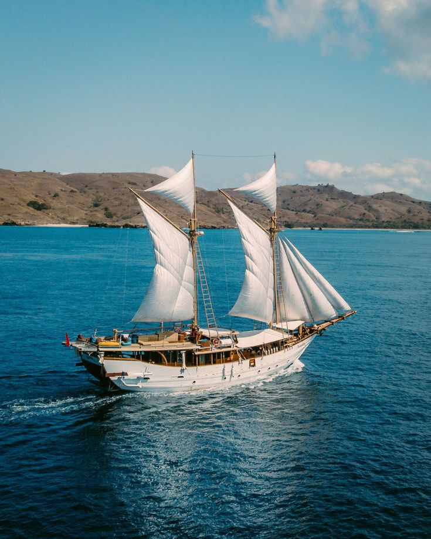

LABUAN BAJO
Fakhrir Rahman adalah seorang pelajar berbakat asal Nusa Tenggara Timur (NTT) yang kini sedang mengejar pendidikan tinggi di Yogyakarta. Ia adalah contoh nyata semangat belajar dan dedikasi yang tinggi dalam mengejar cita-cita. Fakhrir dikenal sebagai individu yang penuh semangat, selalu berusaha keras untuk mencapai tujuannya. Dengan latar belakang dari NTT, Fakhrir membawa kekayaan budaya dan warisan tradisional dari daerahnya ke Yogyakarta. Ia memiliki hasrat untuk memahami perbedaan budaya dan mengintegrasikannya dalam kehidupan sehari-harinya. Dalam lingkungan belajar di Jogja, Fakhrir tidak hanya memperkaya dirinya sendiri dengan ilmu pengetahuan, tetapi juga memberikan inspirasi bagi rekan-rekannya. Fakhrir adalah sosok yang berpengetahuan luas, selalu berusaha mencari solusi kreatif untuk setiap tantangan yang dihadapinya. Kecintaannya pada pembelajaran dan semangat untuk terus berkembang membuatnya menjadi teladan bagi rekan-rekan seangkatannya. Ia adalah contoh yang nyata bahwa dengan kerja keras dan tekad yang kuat, kita dapat meraih impian apa pun, bahkan ketika berasal dari latar belakang yang berbeda.